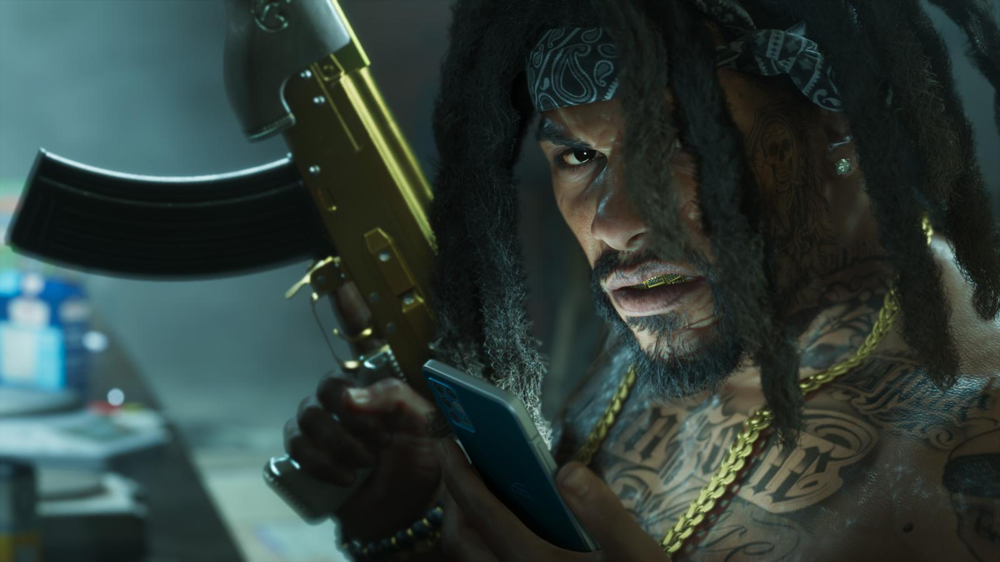

Полиция в GTA 5 и GTA 6: как изменился розыск
Обновлено:

- В GTA 6 снова шесть звёзд розыска — в GTA 5 было пять.
- Розыск начинается, только если преступление кто-то увидел или сработала сигнализация.
- Полиция ведёт на тебя криминальный профиль: внешность, одежда, машина, записи камер.
- Копов больше нет на мини-карте, а перекраска машины уже не спасёт.
- Если разделить Джейсона и Лусию, одна звезда пропадает.
Две погони
GTA 5, 2013 год. Ты угоняешь машину прямо перед патрулём. Звёзды вспыхивают, на радаре расползаются синие конусы обзора. Пять минут петляешь по переулкам, стараясь не попасть в конус, заезжаешь в Los Santos Customs, перекрашиваешь машину — и ты чист. Полиция забыла о тебе навсегда.
GTA 6, 2026 год. Ты грабишь магазин на окраине Вайс-Сити. Камера над кассой записала твою рубашку. Продавщица запомнила лицо. Прохожий видел, на чём ты уехал. Всё это уже в полицейской сводке. Перекраска не поможет: тебя ищут не по цвету машины, а по тебе самому.
Так Rockstar описывает новую систему розыска в расширенном обзоре игры 27 августа 2026 года и на закрытых превью для прессы. Разбираем, что изменилось.
Было — стало
| GTA 5 | GTA 6 | |
|---|---|---|
| Максимум звёзд | 5 | 6 — впервые со времён GTA IV |
| Полиция на мини-карте | да, с конусами обзора | нет — угрозы ищешь сам, способностью «Фокус» |
| Когда начинается розыск | преступление заметили копы или прохожие | нужен свидетель, камера или сработавшая сигнализация |
| Что знает полиция | что преступник — это ты | «криминальный профиль»: внешность, одежда, машина, записи камер, напарник |
| Как сбросить | уйти из зоны поиска, перекрасить машину | сменить одежду и причёску, бросить машину, уничтожить камеры, разделиться |
| Возвращение на место | копы всё забыли | полиция может выставить оцепление вокруг ограбленного магазина |
| Патрульная машина | угнал — получил дробовик | внутри дробовик, винтовка и бронежилет — но и трекер |
По данным расширенного обзора Rockstar (27.08.2026) и превью журналистов. Точные пороги для каждой звезды пока не раскрыты — после релиза проверим сами.
Криминальный профиль
Главное новшество — полиция теперь не «знает всё», а собирает на тебя досье. Под звёздами розыска появляются маленькие красные значки: силуэт человека — у копов есть твоё описание, вешалка — они знают, во что ты одет, камера — есть запись с видеонаблюдения. Каждый значок — отдельная улика, и от каждой можно избавиться отдельно.
Ты уходишь от погони на мотоцикле, сворачиваешь в подземный паркинг, бросаешь байк и выходишь с другой стороны в новой футболке, купленной пять минут назад. Значок вешалки гаснет. Патрульная машина проезжает мимо — у них есть твоё лицо, но в толпе на Оушен-Бич его ещё надо узнать.
Шесть звёзд — возвращение классики. Шестизвёздочный розыск был в GTA III, Vice City, San Andreas и GTA IV — на максимуме за тобой приезжали армия или спецназ. В GTA V Rockstar урезала шкалу до пяти, и 13 лет у серии было пять звёзд. Теперь шестая вернулась.

Четыре цвета звезды
В GTA 5 звёзды просто мигали, когда тебя теряли из виду. В GTA 6 у звезды четыре состояния, и каждое — подсказка:
| Звезда | Что значит |
|---|---|
| ⭐ Белая, сплошная | Копы видят тебя прямо сейчас |
| ✨ Белая, мигает | Прямой контакт потерян, тебя ищут |
| ☆ Полая | О преступлении сообщили, но кто преступник — не знают |
| 🔴 Красная | Ты ушёл, но район ещё прочёсывают |
Полая звезда — самая интересная. Это ситуация, когда полиция едет на вызов, но не знает, кого ловить. Можно спокойно пройти мимо патруля — если ты уже переоделся.
Как уйти от погони
- Смени внешность. Новая одежда гасит значок вешалки, новая причёска — описание внешности.
- Брось машину. Номер и модель — тоже улика.
- Уничтожь камеры. Нет записи — нет значка камеры.
- Разделись. Если Джейсон и Лусия уходят поодиночке, одна звезда снимается сразу: полиция ищет пару.
- Уйди из «горячей» зоны. Районы с плотным патрулированием лучше обходить, пока розыск не остыл.
- Не возвращайся на место. Вокруг ограбленного магазина может стоять оцепление.
А вот полицейская машина стала ловушкой: в ней, как и раньше, можно найти оружие и даже бронежилет, но у патрульных машин есть трекер. Угнал — будь готов, что тебя видят.
Что это меняет
В GTA 5 розыск был аркадной игрой в прятки с конусами. В GTA 6 это маленькое расследование, где ты одновременно подозреваемый и тот, кто заметает следы. Преступление теперь стоит планировать заранее: маска, машина «на выброс», запасная одежда в багажнике. Ограбления станут интереснее — Как зарабатывать деньги в GTA 6. А если хочется увидеть погоню своими глазами — Разбор кадра: погоня на болотах Grassrivers.
Источники: Rockstar Games — расширенный обзор GTA VI (27.08.2026); GTABase (гайд по розыску); VICE (обзор новых механик, 05.09.2026).